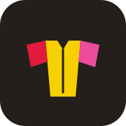
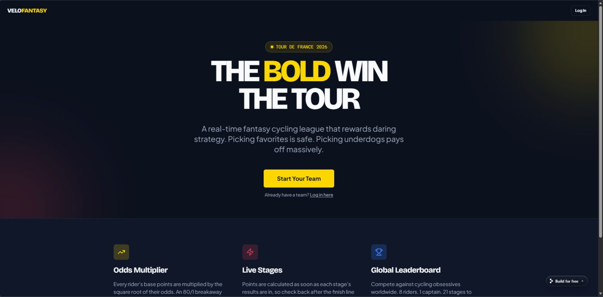
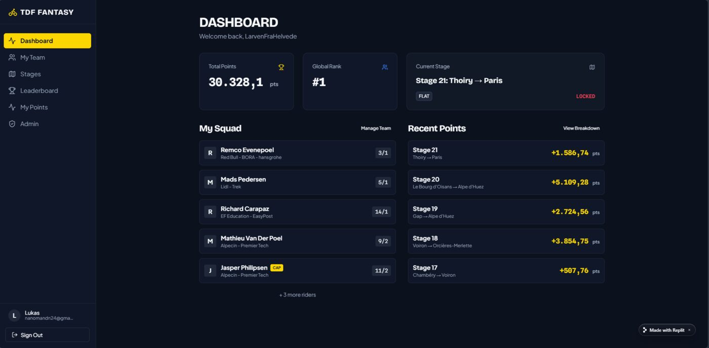
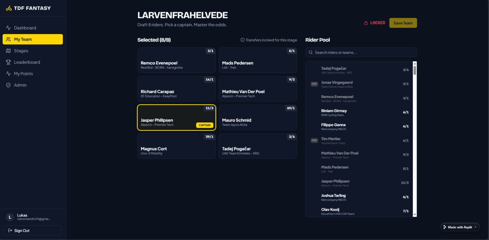
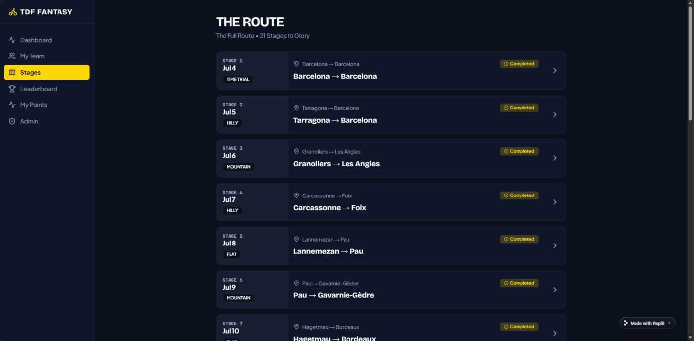
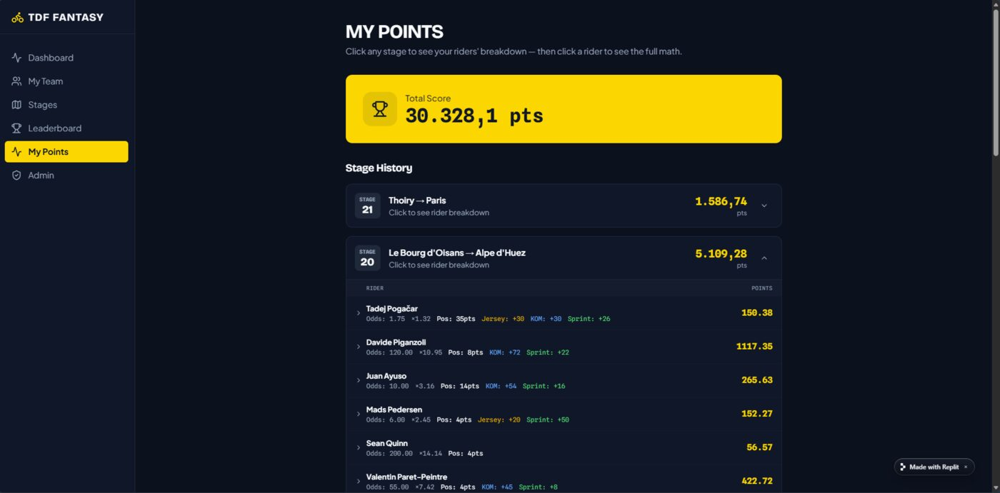
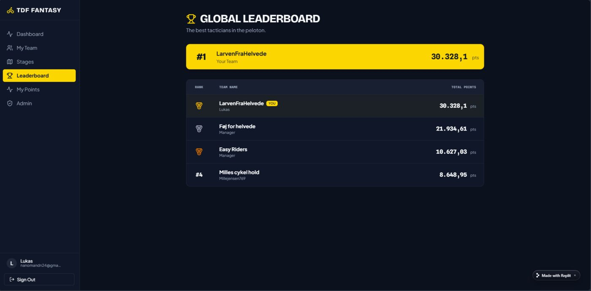
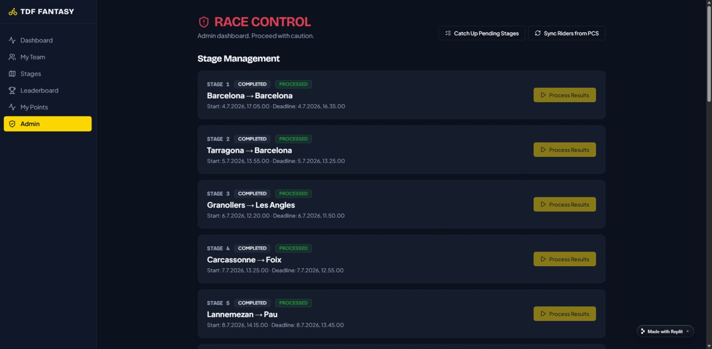

An odds-based fantasy cycling league for the Tour de France — bold picks pay off more than safe ones.
Most fantasy sports score everyone the same way, so picking the favorite is always the safe move. VeloFantasy flips that: every rider's points are multiplied by their betting odds, so an 80/1 breakaway rider who finishes well is worth dramatically more than a favorite doing the same thing. Managers draft 8 riders and a captain, then watch the odds math play out stage by stage across all 21 stages of the Tour.
Rider data, odds and stage results sync from ProCyclingStats through an admin panel, so the league runs on the real race rather than manually entered results.

The landing page sets up the core mechanic up front: odds-multiplied scoring, live stage-by-stage results, and a global leaderboard, before a visitor ever signs up.

Total points, global rank and the current stage's status sit up top, with your squad and recent stage-by-stage point swings right below.

Every rider in the pool shows their current odds while you draft, so the risk/reward tradeoff is visible before you commit. Transfers lock once a stage starts.

Flat, hilly, mountain and time-trial stages are tagged separately, since they change which riders are likely to score, and each stage tracks its own completion status.
A short screen recording of a stage's results being processed and scored live, showing the flow from race result to updated points.

Click into any stage to see exactly how each rider's score was built: base odds multiplier, position points, and bonuses for jersey, KOM and sprint results.

A simple global ranking of every manager's team, so the payoff of a bold draft (or the cost of a safe one) is visible at a glance.

An admin panel syncs rider and odds data from ProCyclingStats and processes each stage's results against its deadline, so the whole league runs on the actual Tour de France as it happens.